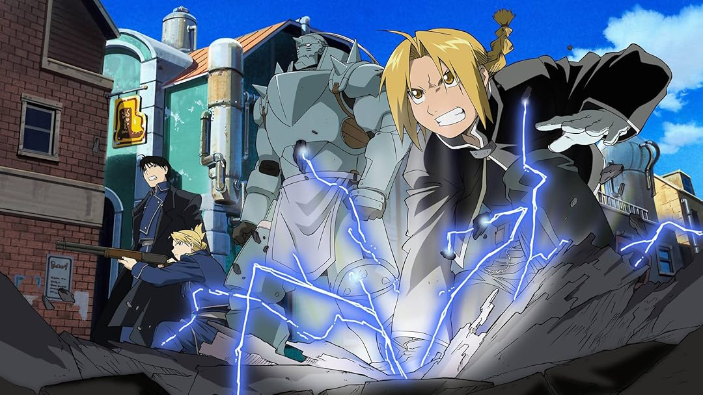
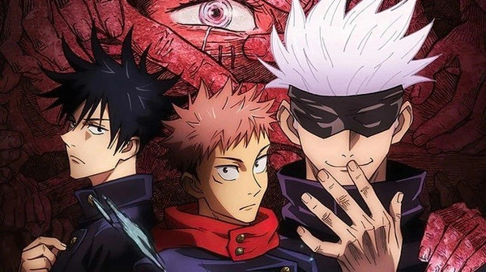
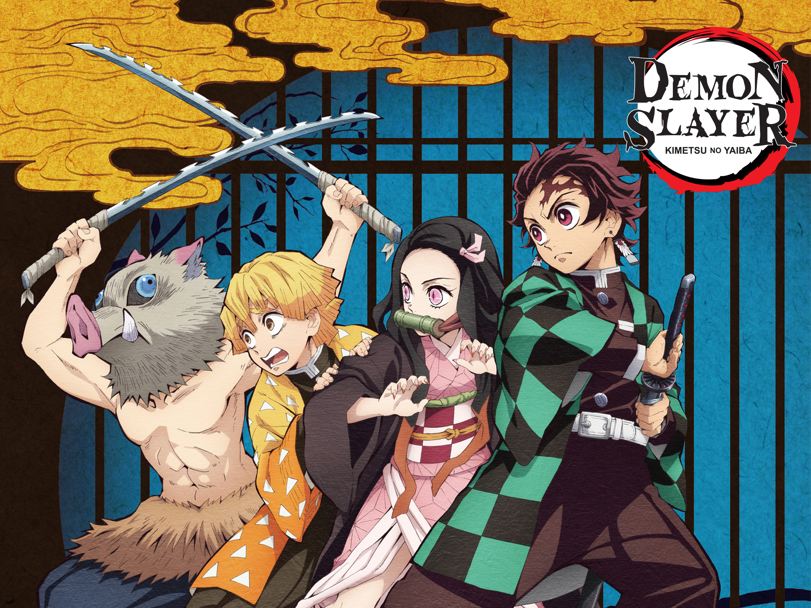

Fullmetal Alchemist: Brotherhood (2009 - 2010)
Fullmetal Alchemist: Brotherhood é uma série de anime japonesa baseada no mangá "Fullmetal Alchemist", de Hiromu Arakawa. A série foi ao ar de 5 de abril de 2009 a 4 de julho de 2010, totalizando 64 episódios. A trama segue os irmãos Edward e Alphonse Elric, que usam alquimia em uma tentativa de trazer sua mãe de volta à vida, mas a experiência resulta em consequências desastrosas.
A série é conhecida por sua narrativa envolvente, desenvolvimento de personagens e exploração de temas como sacrifício, redenção e a natureza da humanidade.
TrailerJujutsu Kaisen (2020 - presente)
Jujutsu Kaisen é uma série de anime japonesa baseada no mangá de mesmo nome, escrito por Gege Akutami. A série foi ao ar pela primeira vez em 2 de outubro de 2020 e rapidamente ganhou popularidade. A trama segue Yuji Itadori, um estudante do ensino médio que se envolve no mundo das maldições após ingerir um objeto amaldiçoado.
A série é conhecida por sua animação de alta qualidade, cenas de ação emocionantes e desenvolvimento de personagens. Ela explora temas como amizade, sacrifício e a luta contra forças sobrenaturais.
TrailerDemon Slayer (2019 - presente)
Demon Slayer é uma série de anime japonesa baseada no mangá de mesmo nome, escrito por Koyoharu Gotouge. A série foi ao ar pela primeira vez em 6 de abril de 2019 e rapidamente ganhou popularidade. A trama segue Tanjiro Kamado, um jovem que se torna um matador de demônios após sua família ser massacrada por essas criaturas e sua irmã, Nezuko, ser transformada em um demônio.
A série é conhecida por sua animação deslumbrante, cenas de ação emocionantes e desenvolvimento de personagens. Ela explora temas como família, amizade e a luta contra forças sobrenaturais.
TrailerAttack on Titan (2013 - 2023)

Attack on Titan é uma série de anime japonesa baseada no mangá de mesmo nome, escrito por Hajime Isayama. A série foi ao ar pela primeira vez em 7 de abril de 2013 e rapidamente ganhou popularidade. A trama se passa em um mundo onde a humanidade está à beira da extinção devido a gigantes devoradores de humanos conhecidos como Titãs.
A série é conhecida por sua animação de alta qualidade, enredos emocionantes e exploração de temas como liberdade, sacrifício e a natureza da humanidade.
TrailerNaruto Shippuden (2007 - 2017)

Naruto Shippuden é a continuação da série de anime Naruto, baseada no mangá de Masashi Kishimoto. A série foi ao ar pela primeira vez em 15 de fevereiro de 2007 e concluiu em 23 de março de 2017, totalizando 500 episódios. A trama segue Naruto Uzumaki, agora um jovem ninja, enquanto ele busca se tornar o Hokage e proteger sua vila.
Ao longo da série, Naruto enfrenta diversos desafios e inimigos poderosos, enquanto também desenvolve suas habilidades e forma laços com outros personagens.
A série é conhecida por seu desenvolvimento de personagens, enredos emocionantes e temas de amizade, perseverança e redenção.
TrailerHunter x Hunter (1999 - 2001 / 2011 - 2014)

Hunter x Hunter é uma série de anime baseada no mangá de Yoshihiro Togashi. A primeira adaptação para anime foi ao ar de 1999 a 2001, enquanto uma nova adaptação, conhecida como Hunter x Hunter (2011), foi transmitida de 2011 a 2014. A história segue Gon Freecss, um jovem garoto que descobre que seu pai, que ele acreditava estar morto, é na verdade um Hunter de renome. Determinado a se tornar um Hunter e encontrar seu pai, Gon embarca em uma jornada cheia de desafios e aventuras.
Hunter x Hunter é conhecida por seu enredo complexo, desenvolvimento de personagens e batalhas estratégicas.
Trailer{kind=link}
{kind=link}
/i.s3.glbimg.com/v1/AUTH_08fbf48bc0524877943fe86e43087e7a/internal_photos/bs/2025/T/L/AuXEBTQ4yocIS47MIs4A/gy3vkx1mr-backdrop-wide.jpg){kind=link}
{kind=link}